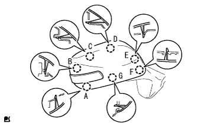
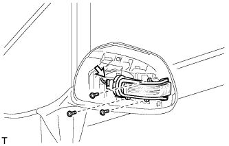

Side Turn Signal Light Assembly LH Removal |
| 1. Remove Outer Mirror LH (w/o Cold Area Specification) |
Push the upper part of the mirror surface to tilt the mirror.
 |
Apply protective tape to the positions shown in the illustration.
Using a roof molding remover, disengage the 2 claws.
 |
Disengage the 2 guides and remove the outer mirror RH.
| 2. Remove Outer Mirror LH (w/ Cold Area Specification) |
Push the upper part of the mirror surface to tilt the mirror.
|
Apply protective tape to the positions shown in the illustration.
Using a roof molding remover, disengage the 2 claws.
|
Disengage the 2 guides and separate the outer mirror RH.
 |
Disconnect each connector and remove the outer mirror RH.
| 3. Remove Outer Mirror Cover LH |
 |
Push claws A, B, C, D and G from the back side of the outer mirror cover RH to lift it.
Starting from the lifted area, disengage the 7 claws and remove the outer mirror cover RH.
| 4. Remove Side Turn Signal Light Assembly LH |
 |
Disconnect the connector.
Remove the 3 screws and remove the side turn signal light assembly LH.